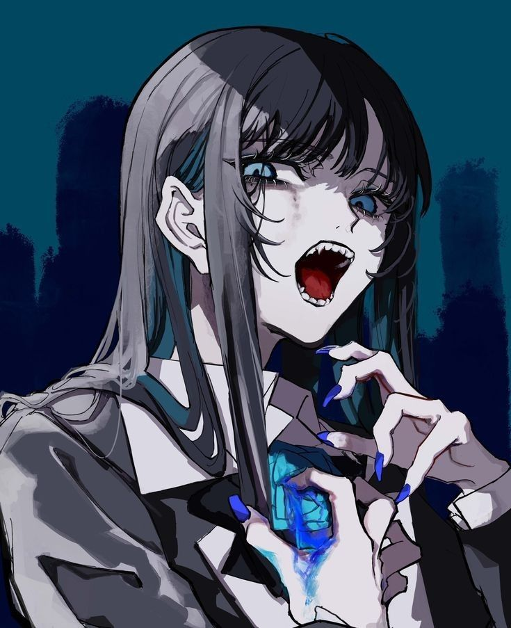

Take Me To The Beach (feat. Ado) People-pleasin' planet People-pleasin' planet Got a million people sayin' how to plan it Got a million people sayin' how to plan it I can no longer stand it I can no longer stand it Gonna spend my days tellin' them to can it Gonna spend my days tellin' them to can it Each and to their own Each and to their own Got a salesman ringin' my phone Got a salesman ringin' my phone Tell me where to go Tell me where to go No, I don't wanna hear the down low No, I don't wanna hear the down low I owe, oh-oh-oh I owe, oh-oh-oh Nothin', not a penny, never wanna hear you preach Nothin', not a penny, never wanna hear you preach No, oh-oh-oh No, oh (Take-take-take-take) (Take-take-take-take) Take me to the beach (ah-ah-ah) Take me to the beach (ah-ah-ah) You could have the mountains (ah-ah-ah) You could have the mountains (ah-ah-ah) You take the snow (ah-ah-ah) You take the snow (ah-ah-ah) It's way too cold It's way too cold My heart is cold enough (ah-ah-ah) My heart is cold enough (ah-ah-ah) Push comes to shove (ah-ah-ah) Push comes to shove (ah-ah-ah) You could have the mountains (ah-ah-ah) You could have the mountains (ah-ah-ah) I'll take the beach I'll take the beach Ah, 聞く耳断つ Ah, kiku mimi tatsu 奴が大層な胸を張る Yatsu ga taisō na mune wo haru また構わずやる Mata kamawazu yaru 「望まない」から舌を打つ地 Nozomanai kara shita wo utsu chi Tsk, Ah (チッ) え? Ah (Chī) e? Ah 神か仏か? ヒト気取りか? Kami ka hotoke ka? Hito kidori ka? 頭の中 leave me alone Atama no naka leave me alone 誰になればいいの? Dare ni nareba ii no? Take your hands off Take your hands off I owe, oh-oh-oh I owe (I owe, I owe) 吐き出す前に口をとじろ Hakidasu mae ni kuchi wo tojiro No, oh-oh-oh No (I owe, I owe) Take me to the beach (ah-ah-ah) Take me to the beach (ah-ah-ah) You could have the mountains (ah-ah-ah) You could have the mountains (ah-ah-ah) You take the snow (ah-ah-ah) You take the snow (ah-ah-ah) It's way too cold It's way too cold My heart is cold enough (ah-ah-ah) My heart is cold enough (ah-ah-ah) Push comes to shove (ah-ah-ah) Push comes to shove (ah-ah-ah) You could have the mountains (ah-ah-ah) You could have the mountains (ah-ah-ah) I'll take the beach I'll take the beach I'm better off alone (better off alone) I'm better off alone Like a rollin' stone (like a rollin' stone) Like a rollin' stone Turnin' off my phone (off my phone) Turnin' off my phone No one bringin' me down, down, down, down No one bringin' me down, down, down, down Just give me some space (just give me some space) Just give me some space That Sun in my face (Sun in my face) That Sun in my face And the days go on, and on, and on, and on And the days go on, and on, and on, and on (T-A-K-E, take me to the) (T-A-K-E, take me to the) Beach (ayy) (ah-ah-ah) Beach (ayy) (ah-ah-ah) You could have the mountains (have the mountains) (ah-ah-ah) You could have the mountains (have the mountains) (ah-ah-ah) You take the snow (ah-ah-ah) You take the snow (ah-ah-ah) It's way too cold (it's way too cold) My heart is cold enough, ah Push comes to shove, ah You could have the mountains, ah I'll take the beach (I'll take the -, I'll take the -) Take me to the - I don't have no friends, ask anyone Got me 'til the end, my favorite one Take me to the beach I don't have no friends, ask anyone (ask anyone) Got me 'til the end, my favorite one Take me to the beach
